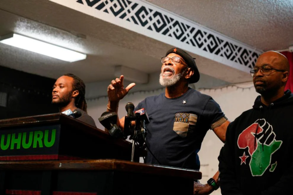
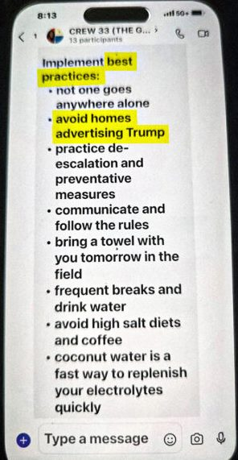
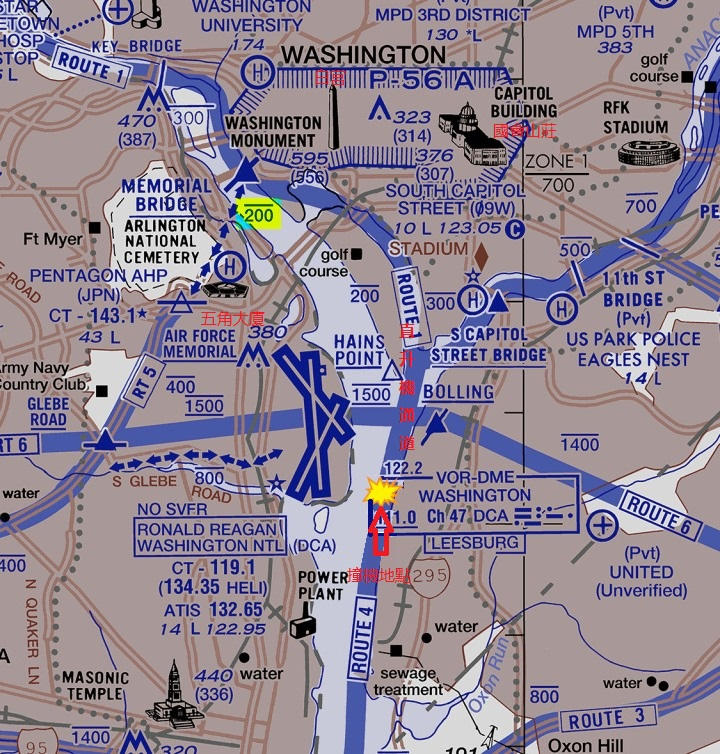

【美國】海湖莊園抄家事件幕後的美國政治鬥爭
2022-09-16 10:55:00
原文网址：https://blog.udn.com/MengyuanWang/177165976
【後註一，2022/12/06】正文的第四段落談到整個通俄門都是無中生有。當然在炒作過程中，有Obama政權的全力配合，例如驅逐大批俄國外交官等等；但民主黨主控的衆議院還特別成立調查組，在調查過程中，各番打臉的證據難免湧現，尤其是負責檢驗號稱被駭的伺服器的網絡安全公司，在宣誓證詞中確認毫無一絲駭客行動的跡象，絕對必須被封鎖。這個工作最後是由民主黨衆議員和主流媒體合作完成（參見《US Intelligence community & conflict with Russia》）；大家可以拿來和本周Musk所透露的“Twitter門”做參照。
上面我引用的視頻長達兩個多鐘頭，不一定每個人都能耐心看完，所以這裏我再指明其中另一個值得特別注意的論點，亦即美國決策階層的内部討論在1980年代仍舊尊重事實與邏輯，誠實還是主流。我反復强調，過去40年美國衰落的最基本要素，在於誠信的腐蝕；那些認爲中國科技管理單位放任假大空充斥並無大害的人，應該好好參考美國的前例：那般强盛的政治和經濟基礎尚且承受不住詐騙文化的損害，直接面對自然現象的科研界怎麽可能免疫？
【後註二，2022/12/20】Twitter被Musk接管之後，有共和黨民粹派的人開始挖掘其記錄，很快地證明Twitter在過去幾年基本是FBI的外圍宣傳組織，然而主流媒體完全視而不見、不予報導，只有在自媒體才能找到真相。這裏是最新的爆料（參見《WHY WAS FBI COUNTER INTELLIGENCE INVOLVED WITH THE SETH RICH CASE?》），指出【後註一】所討論的2016年通俄門之中，所謂Hillary和DNC的伺服器被駭的初始證據，原本就是FBI無中生有用來栽贓的，因而後續的專業檢驗才會查無實據。
【後註三，2022/12/25】根據最新的Twitter爆料（參見《Latest Twitter Files shows CIA, FBI have spent years meddling in content moderation》），FBI只是聯邦機關掌控國内輿論的接觸面，轉發其他部門的要求是日常。這些部門並不對Twitter署名，而是統稱為“OGA”，“Other Government Agencies”。換句話説，除了各MSM（MainStream Media）編輯部的常規撒謊之外，如果MI6要散佈新的特定假新聞，英屬媒體可以簡單先發，而美國傳媒的配合，“正規”管道必須先轉CIA、再轉FBI；這難免會導致一些協調不完美的案例，可供外界觀察者推測虛僞報導的原始來源。
【後註四，2023/01/13】本周Biden也被爆料在住所和私人辦公室存有機密文稿，而且有越捲越大的趨勢。因爲主流媒體廣汎報導，請有興趣的讀者自行搜索資料，我在此只提幾個重點觀察：1）這些機密文件來自他的副總統任期，所以遠比Trump案更嚴重，因爲只有總統有權解密；2）到目前爲止的消息指向原始吹哨者是Biden自己的私人律師團隊；3）他們吹哨的對象是National Archives and Records Administration（NARA，國家檔案和記錄管理局），而不是FBI。綜合（2）和（3）來看，此事值得玩味：首先，因爲律師有Attorney–client privilege（律師-委託人特權），對沒有記錄的零散文件有簡單銷毀的選項（理論上是非法，實際上是政商界的日常，尤其這些文件並不是犯罪的證據之一，而是犯罪本身的全部），就算要吹哨，也可以拖上好一段時間，但當前的説法是很快上報，只拖過中期選舉。其次，民主黨若要遮掩醜聞，FBI是經過千錘百煉的可靠工具人，NARA卻剛好相反，是純粹非政治性的專業部門，一旦介入，基本不可能不被公開鬧大。雖然已有的資訊還不足以100%確信，所以我並不想做結論，但如果這些消息細節在日後被證實，那麽有兩個主要的（Not mutually exclusive）邏輯引申：1）民主黨内部逼宮以迫使Biden不尋求連任（時間點符合這個假設，因爲Biden必須在今年年中決定是否競選連任）；2）FBI已經在Trump案爲了單位山頭的私利而過度活躍，若是再經辦新案子則必然呈現偏心反差，所以不得不另找管道以避免尷尬。考慮既有證據的强度，博客暫時只能接受後者為Occams Razor下的Default選項。
【後註五，2023/01/21】Dreizin（參見《Dreizin Takes On The Church Of Homo》“America Is One Big Cult”）最新爆料，三個月前才剛“發現”Biden私藏機密文件的律師和助理團隊中，已經有人因“抑鬱症”而自殺了。我並不預期主流媒體對此做任何報導，所以細節難以驗證。
【後註六，2023/01/25】2016年引發RussiaGate的FBI官員Charles McGonigal（當時他是FBI紐約反情報部部長，2018年退休）剛剛被逮捕起訴（參見《Ex-FBI official Charles McGonigal accused of helping Russian oligarch》），罪名是接受俄國大亨Oleg Deripaska的賄賂，幫助後者打壓其他敵對大亨。Hillary團隊僞造Steele dossier所雇用的英國團隊Orbis Business Intelligence，也曾收過Deripaska的錢，但沒有證據證明他與民主黨有直接的合作關係。這裏揭露的，並不是俄國人直接發動或參與RussiaGate，而是同一批昂撒假新聞製造商和腐敗官員來者不拒、有奶便是娘的生意哲學。
【後註七，2023/03/26】2016年的RussiaGate事件中，實際指向俄國駭客的證據是零，因此最近這篇報導（參見《The Trump Campaign’s Collusion With Israel》）指控以色列才是幕後黑手，雖然證據依然薄弱，照理應該得到至少等同RussiaGate的曝光度，但現實裏的美國媒體當然不會講理。
【後註八，2023/04/06】不是長住美國的人或許不知道，釣魚執法在美國不但合法，而且是日常。像是“Jan 6”這類“暴動”中，領頭鬧事最凶的，往往正是FBI和各級警察單位的“綫民”“Informants”。過去這一年，在許多參與者的審判過程中，這些綫民不斷曝光，至今的非正式統計已有至少40多人；以下是建制派喉舌《紐約時報》對其中之一的報導（參見《In Proud Boys Jan. 6 Sedition Trial, F.B.I. Informants Abound》）。

【後註九，2023/04/21】三名Black Empowerment幹部（亦即追求真正種族平等的黑人反霸主義運動，當年的Black Panther是其中一個分支）剛剛被逮捕起訴（參見《Black activists charged with role in Russian propaganda scheme》），罪行是和一個俄國NGO合辦了一場網絡座談會，並且膽敢在會中批評美國挑動俄烏戰爭，所用的罪名是“conspiracy to defraud the United States and impersonating agents of foreign governments”。這裏最奇怪的是，號稱對種族運動非常熱心的民主黨系主流媒體，竟然一句話都不提，難免讓人懷疑所謂的“民主”、“自由”、“平等”，其實正是一個充滿著專制、奴役和歧視的體系利用特權所創造出來的謊話，只不過他們的撒謊是無孔不入、極度無恥罷了。
【後註十，2023/04/25】美國主流媒體中，唯一敢高調反建制派的媒體人Tucker Carlson，終於被Murdoch開除了。除了一個很弱的霸凌藉口（有一個女下屬控告工作太重、薪水太低、升遷太慢；這種全世界99.9%的雇員都面臨的問題，也能拿來做訴訟罪名，是當代美國的特有現象）之外，一般的傳言猜測是《Fox News》剛剛打輸了和Dominion的官司；然而實際上Carlson雖然也參與了對Dominion的指控，但當時《Fox》的主播人人有份，他絕不算處在最出風頭的前列之中；更合理的解釋是他不但向來公開為Trump站隊（雖然有私下嘲笑Trump智商的錄音傳出），被開除的四天前才又剛采訪Robert Kennedy Jr.（參見《Robert F. Kennedy Jr tells Tucker this is turning America into a system of socialism for the rich》），如果放任他支持鼓吹Trump和Kennedy的大選對陣，建制派就完全沒戲了。
【後註十一，2023/04/25】2016年民主黨總部（DNC）機密電郵外泄，暴露了建制派各種非法打壓Sanders以支持Hillary的手段，立刻被主流媒體宣傳是“俄國駭客”所爲。同一時段任職於DNC的IT管理員Seth Rich在家中被槍殺，有傳言他才是真正泄露消息給Wikileak的深喉嚨，但所有的昂撒“Fact Checker”“事實查核者”例如PolitiFact、Snopes和FactCheck.org都立刻斬釘截鐵地否認。經過7年的國會和法庭證詞，我們現在終於可以確認事實恰好與主流媒體所述相反，DNC從來就沒有受過駭客攻擊，而Seth Rich的確是Sanders支持者，因而偷錄了閃存盤交給第三者（但如何轉交給Assange仍未被確定），那麽謀殺他的主謀是誰也就呼之欲出了；詳情參見《Why Kim Dotcom Connects The DNC Email Leak To The Murder Of Seth Rich (Updated)》。
【後註十二，2023/04/25】2020年Hunter Biden筆記本電腦曝光之後，51名CIA官員立刻聯名宣稱這是俄國情報機構造假的結果，主流媒體和“事實查核者”隨即依此為根據而否認Biden貪腐醜聞。不過上周的國會證詞證明那些CIA官員是應Blinken要求而憑空撒謊，詳情參見《THE FISH ROTS FROM THE HEAD — WHY THE CIA IS DYSFUNCTIONAL》。順便提醒大家，博客的批評，針對的從來不是預先鎖定的國家或個人，而是謊言假話，美國只不過剛好是全世界最頻繁、最離譜、危害也最深的撒謊者，王貽芳、丘成桐和潘建偉這些人也同理。
【後註十三，2023/08/12】上個月負責Hunter Biden逃稅及貪腐案的Delaware州聯邦檢察長David C. Weiss（名義上在Trump任期被任命，但實際上是Biden家鄉出身的建制派政客）草草結案，以Misdemeanor行爲不檢級別的輕罪和Biden和解，然後在7月28日被法官駁回。這是相當不尋常的駁斥，只有在太離譜的包庇情況下才可能發生。於是在輿論壓力之下，昨天Biden内閣的總檢察長（Attorney General，相當於法務部長）Merrick Garland（曾被Obama推薦候任最高法院法官，但因共和黨國會阻撓而撤回提名，從而被Joe Biden任命執掌聯邦檢察系統之後，對黨爭不遺餘力）任命了Special Counsel特別檢察官（擁有額外的調查權）來接管Hunter Biden案。不過很可笑的是，這個“特別”檢察官正是既有的同一位“普通”檢察官Weiss（參見《The Bidens Case Will Keep On Giving》），那麽查案是否公允，基本可以簡單事先預期。這麽無恥之事，之所以可以公然地幹，當然是因爲主流媒體會全力配合，低調報導，隱藏遮掩邏輯上的不合理之處。
【後註十四，2024/03/04】幾個月前，當民主黨州推出將Trump踢出候選名單的新發明之時，我曾在留言欄評論，這在最高法院大法官由共和黨佔多數保底的前提下，絕對沒有一絲可能性過得了審查。結果因爲實在太離譜，連民主黨籍的大法官都替他們尷尬，實際的判決投票是9：0，否決了Colorado預先排除Trump的昏招，參見《States can’t kick Trump off ballot, Supreme Court says》。不過在州法院能否干預聯邦選舉的原則性議題上，仍然有少數意見認爲應該容許開例外的可能。
【後註十五，2024/07/22】我在三天前的《龍行天下》節目中，解釋了Trump遇刺不可能是自導自演，其邏輯根據在於兩件技術細節：1）該種步槍彈威力遠超鋼筆手槍數十倍，只要稍微碰到頭蓋骨之類的硬性目標就必然會全面開花；2）130公尺的距離對命中人體固然算是很近，但要達到1公分的精度擦邊而過，即便是專業狙擊手用狙擊槍對靜止目標也沒有100%的把握，更別提Trump搖頭晃腦根本無法掌控。今天果然就有美國的步槍愛好者在《YouTube》上以實際裝備複製並確認了這兩個論點，有興趣的讀者可以參考《Testing The Assassination Attempt of Donald Trump》，特別注意視頻5：14之處。
【後註十六，2024/11/12】美國黨爭之劇烈、下手之狠辣、濫權之肆無忌憚，已經到了無視人性道德底綫的地步，以致許多乍看之下像是陰謀論的傳言，事後反而被證實爲真，只不過主流媒體必然低調處理，白左群衆完全可以一輩子沉浸在假新聞泡沫之中罷了。例如已在國會聽證證明為Hillary團隊有意捏造的“通俄門”，至今仍是民主黨選民普遍接受的“常識”，主流媒體也依舊將其作爲新仇俄指控的“根據”。
以下又有一個新案例：過去兩個月幾個颶風登陸，很快有廣汎的災民抱怨，只要是支持Trump的地區，基本就沒有任何FEMA聯邦緊急措施署的行動，然後自然有主流媒體出來“闢謠”，說這是共和黨的競選陰招、虛僞宣傳，例如《紐約時報》的這篇文章：《Trump’s False Claims About the Federal Response》。直到大選結束、Trump勝出後，終於有FEMA隊員敢匿名泄露來自管理層的執行準則，上面明文寫著不准幫助支持Trump的選民家庭（參見下圖），這才迫使FEMA做出反應，開除了那個直屬上級（參見《FEMA employee fired for urging team to not help homes with signs backing Trump》；請注意FEMA在這裏玩弄的文字游戲：明明是管理階層，卻被稱爲“employee”“雇員”，主流媒體當然照本宣科，詳情證據完全不提），但依舊堅持是“個人行爲”，其他指責一概不認。

【後註十七，2024/11/13】Kamala Harris大選落敗的連鎖效應之一，是她的競選基金負債纍纍，無望清償。在準備破產的過程中，開始有開支細節泄露出來，例如昨天有媒體揭露，這個競選基金在今年9月和10月分兩次反向“捐贈”共50萬美元給《MSNBC》的政論節目主持人Al Sharpton，然後才有後者在10月24日所做的“Softball”“喂球式”訪談，詳情參見《Harris campaign donated $500K to Al Sharpton’s nonprofit before softball MSNBC interview》。美國黨派山頭（Sharpton是所謂的黑人民權領袖，算是民主黨外圍勢力，還沒有資格作爲深層政府成員）之間親兄弟明算賬的作風，還真不愧資本主義大本營的名頭。
【後註十八，2024/11/21】上周Trump提名為司法部長的Matt Gaetz，在建制派政客和主流媒體的一頓狂轟濫炸之後，終於被迫退出職位的競逐。不過與《紐約時報》（參見《Matt Gaetz’s Withdrawal Follows Revelations in Sex-Trafficking Inquiry》）所説的不同，官司並不是他被逼退的原因，而只是藉口；事實剛好相反：正是因爲他被建制派司法黑手以連串官司迫害得很慘，Trump才會想要派任他來整頓司法部。他必須退出的真正原因是參議院中的共和黨建制派明確拒絕通過任命案（參見Gaetz自己的聲明：在與參議員們進行了深入溝通之後，我決定退出...；原文見下圖），是我上周在《龍行天下》節目中討論的Thune接替McConnell出任參議院多數黨領袖的後續影響，亦即建制派在大選剛結束就給Trump的下馬威。

【後註十九，2025/02/03】五天前，一架美國陸軍負責運送首都VIP的黑鷹直升機與民航機發生數十年來最慘烈的空中對撞事故。由於NTSB已經發佈初步調查公告（參見《NTSB officials share the latest details in the DC plane crash investigation and recovery efforts》），我們可以確定立即責任（Immediate responsibilities，亦即不考慮深層的背景因素，例如管理不善、規劃失當等等）基本在於黑鷹飛行員的兩個嚴重失誤：1）目視辨認追蹤民航機時，選錯了目標；2）偏離法規限定的直升機通道（Helicopter Corridor，參見下圖中的藍色粗綫，肇事的黑鷹沿Route 1由北向南飛；這條直升機通道的高度上限是200英尺，而撞機事故發生在325英尺；姑且不論只預留100英尺的容錯空間是否明智，正因爲容錯空間這麽小，直升機飛行員更應該嚴格遵守規定；我自己就曾經多次駕駛小飛機飛過曼哈頓市區邊緣哈德遜河上方低空的通用航空通道，很難想象會有那麽愚蠢而頭鐵的飛行員在夜晚的機場跑道端外一公里處也敢違規）。

Trump在第一時間做出評論，認爲事故是近年來的白左DEI政策（Diversity、Equity、Inclusion，多元、平等、包容，也就是不顧能力和資格，而根據種族、性別、性取向等等政治正確標準來錄取和提拔員工）的惡果，於是立刻遭受主流媒體的嚴厲譴責批判（例如《CBC blasts Trump’s DEI comments after Potomac plane crash》）。然而美國陸軍雖然很快公佈了黑鷹三名乘員之中兩名隨機士官的身份，卻扭扭捏捏一直不肯説明軍官正駕駛（Pilot Flying）是誰，當時就有一些擁Trump博主猜測會是女性、同性戀或變性人，引發了白左網紅的口水轟炸。拖了幾天，官方才終於承認是上尉Rebecca Lobach（拖延的藉口是“徵詢家人意見”，但美軍素來無此慣例）。這個消息立刻讓MAGA網民炸了鍋，因爲Lobach不但資歷甚淺，只有450飛行小時，卻被破格提拔、委以運載政治權貴的重任，而且的確正是Biden政府拿來表彰DEI政績的招牌人物之一，擁有官方頭銜“White House military social aide”，並屢次以“傑出女性”身份受邀參與白宮宴會。所以不論旁觀者的個人主觀政治偏向，都必須接受以下的明確客觀事實：本次事故的直接罪責在於黑鷹飛行員的不適任，而這名女飛行員恰恰是Biden的DEI政確明星。
多年前我曾評論，Trump雖然是個習慣性撒謊者（Habitual Liar），但他隨口撒的那些小謊與建制派的大謊言相比，根本無足輕重；既然政客中只有他願意揭穿那些大謊言，即便堅持道德考慮的選民也有很好的理由支持MAGA。這次事件是個很好的例子：Trump反射式地批判DEI顯然不是深思熟慮、有根有據的論斷，但這樣不負責任、沒有絲毫科學嚴謹性的隨口胡説，卻能恰好揭開白左的國王新衣，反映的不是Trump自身的智慧和能力，而是美國病入膏肓、無處不糜爛的慘狀。
【後註二十，2025/03/21】今年2月11日，一架航班標號Delta Connection Flight 4819的Bombardier CRJ900支綫客機在加拿大多倫多機場降落時失事，飛機向右偏離跑道並滾轉180°，所幸被草坪上的雪堆阻滯，折斷的機翼釋放燃油起火也因積雪而自行熄滅，最終飛機上下顛倒、停在滑行道上，乘員全部自行撤離、無人死亡（參見下圖）。
昨天監管單位公佈了初步調查報告，其中包括根據黑盒子資料推定的事故經過細節，顯示肇事責任在於當時負責飛行“Pilot Flying”的副機師First Officer，著陸前幾秒因不穩定的陣風Wind Gusts而手足無措、引擎推力設定過低、然後甚至忘了拉起機頭進入Landing Flare著陸前拉平，導致飛機以過高的垂直速度砸在跑道上，右起落架當即崩潰，引發滾轉（參見《Black Boxes DECODED - What the pilots REALLY did》）。
原本航空業難免有人爲失誤，但這次事故有一個驚人的細節，亦即那個副機師是個只有1000飛行小時出頭的女性。美國因爲通用航空發達，飛行員俯拾皆是，因此法規對載客航班機組的要求特高，達到全球僅見的1500小時；雖然有特殊條款容許將門檻降至1000小時，但機師職位粥少僧多、航空公司手上2、3000飛行小時經驗的求職信堆得山高，根本不須要紆尊降貴、額外花錢請律師走那個後門，硬去雇用經驗特低、能力可疑的新進員工。所以這些特許機師絕無僅有、極爲罕見，也就難怪任何對美國航空行業稍有瞭解的人，都要立刻懷疑這名副機師是Delta爲了滿足DEI quota政確指標而强行引入的不稱職員工，甚至她可能整個飛行生涯都是因性別而被一路破格開綠燈。與【後註十九】所討論的黑鷹女機師綜合研判，半個月内連續發生兩起高度疑似DEI所導致的重大事故，顯然值得深究，但美國社會腐敗如斯，即便新換了反DEI的Trump政府，也依然不可能深究。
男女平等的真諦在於保障弱勢群體的公平就業機會（更別提人身安全，包括職場不受性騷擾和逛街不受搶劫性侵的權利），而不是揠苗助長、做出反向性別歧視，否則除了犧牲公平原則之外，社會運行效率也會大打折扣，連無辜群衆的生命都可能被連帶犧牲，這場事故只不過又一個小小的案例。然而社會文化一旦偏離了選賢與能Meritocracy的正道就極難改正，美國是前車之鑒；中方雖尚未面臨被DEI荼毒的嚴重危險，在學術管理上卻任由學閥發揮政治動能扭曲評選、獨占資源，同樣是打壓賢能，應儘早改正、並深以爲戒。
【後註二十一，2025/04/15】美國在1970年代批量建設了總電功率達100GW的數十個核電站，於是必須設法解決核廢料的善後問題。被探索的方案之一，是一個實驗性的地下儲存庫，建在新墨西哥州沙漠中的深層鹽礦裏，叫做《Waste Isolation Pilot Plant（WIPP）》《廢棄物隔離示範工廠》。
2014年2月14日，WIPP忽然發生化學爆炸，導致超鈾元素（Transuranium elements，這是核裂變廢料中放射毒性最高的一類，但若以核聚變全面取代核裂變發電，其所需的氚在總量和毒性上都會更高出6-8個數量級；換句話説，所謂“核聚變清潔安全”是純粹睜眼説瞎話的謊言，參見博文《談未來的能源技術》）被釋放到外界，並有20多名員工承受了放射危害，所幸無人死亡。後續處理共花費5億美元，WIPP也已在2017年重啓，這主要歸功於爆炸只發生在一個儲存桶，所以外泄的放射性毒素原本就很有限。
這個案例照理應該放在技術性博文下討論，但事故報告（參見《What happened at WIPP in February 2014》所包含的PDF鏈接）所描述的出錯原因匪夷所思，更適合用來印證當前美國科技和工業的腐朽程度，剛好Trump正在以關稅等脅迫性手段試圖重建美國的製造業，所以附錄在這篇正文之下供讀者參考。
其實出事的儲存桶並不來自任何發電站，而是Los Alamos國家實驗室為軍方提純Plutonium鈽之後的廢料。因爲提純鈽必須使用硝酸來溶解去除雜質，所以廢料處於硝酸溶液狀態，這有很高的腐蝕性和不穩定性，必須在裝桶之前先以吸濕材料固化，而最便宜有效的吸濕材料正是Cat litter貓砂。然而貓砂雖然原本以黏土為主成分，但近年來無腦環保組織越發吹毛求疵，於是爲了滿足“Eco Friendliness”“生態友善性”，廠商又開發了“Biodegradable”“可生物降解”的版本，這當然必須改用碳基原料。2012年，Los Alamos開了一場内部的技術會議，以制定廢料裝桶的標準程序，結果負責總結的小主管居然把“Inorganic absorbant”“無機吸濕劑”誤聼記錄為“An organic absorbant”“一個有機吸濕劑”，然後這個離譜的條例通過層層復審，被寫入官方采購要求，最後采購部門很盡職地買了更貴的可生物降解有機貓砂，被工人有板有眼地與硝酸混合裝桶。我自認是化學文盲，相關專業知識只達到大一普化的程度，但“硝酸+有機物”這個危險的組合連我也能立刻知道不對勁。Los Alamos是美國的頂尖科研機構，一個負責技術標準的主管居然連這麽基本的化學常識都不具備，很難不讓人懷疑他/她是因爲種族或性別而被DEI政策破格提拔的不適任雇員；此外被“快樂教育”荼毒了半個世紀的美國基礎教育水平也可能對這個事故有所貢獻。政確文化和快樂教育都是再工業化的嚴重阻礙，美國類似的體制缺陷還有很多，基本無可解決，所以Trump以霸凌來强迫外商在美國建廠，注定是損人不利己的低效行爲。
【後註二十二，2025/04/29】我在【後註十九】回顧一月底的華盛頓特區空難時，曾批評肇事的女黑鷹飛行員“愚蠢而頭鐵”，現在看來還不夠，必須再加上“傲慢和惡劣”。根據NTSB剛發佈的黑匣子機艙語音記錄（參見《Army Blackhawk pilot in DC crash failed to heed flight instructor’s command 15 seconds before deadly collision: report》），在撞擊前15秒副機師兼飛行教練（該航次是專為那名女飛行員安排的訓練飛行）要求她左轉遠離右手邊的機場跑道，回歸河流東岸的直升機通道（這也代表著撞擊地點比我在二月製圖時所標識的，更靠西北2、300公尺，基本在河流中綫），被她忽略無視。這不但是飛行專業上的不智之舉，也違反了軍隊紀律，不像是偶然，更可能來自女權運動者對男性權威人物的習慣性反感和抵制；若果真如此，那麽DEI不只是本次事故的背景元素，根本就是直接主因。
【後註二十三，2025/06/15】我注意到Hegseth主管的國防部居然拿自己的部門開刀（參見這篇國防部備忘錄《Memorandum Directing Reorganization of the Office of the Director of Operational Test And Evaluation》），乍看之下，頗爲奇怪，畢竟Elon Musk和他的DOGE才剛剛因爲想在財政部和國防部削減預算而踢到鐵板、黯然出局。而Hegseth被Trump任命的主要任務是反DEI，這個被强迫縮編80%的衙門也與DEI絲毫無關。
其實這個Office of the Director of Operational Test And Evaluation（DOT&E）是一個直屬國防部長的監管單位，專門復查新武器采購的品管。美國自建國以來，戰爭就一直是官商勾結、迅速致富的終南捷徑，軍工業早就為四大軍種的將官們建立好旋轉門，而原本新武器是否達標是由這些軍種自行評估批准，弊端叢生，於是在1983年特別成立了DOT&E，以作爲建制内的吹哨人，其作用類似FAA與波音深度勾結下，NTSB雖無權糾正，至少能在事故後敲敲邊鼓，藉著實話來施加一點輿論壓力。現在這樣一個運行40多年的清水衙門忽然被徹底閹割，代表著Trump治下的聯邦貪腐又上了一個臺階，達到21世紀的新高度；在美國去工業化效應日益顯著、軍工研發屢屢失敗的當下，更有為不合格產品大開後門的直接作用，對美軍在帝國衰敗過程中所能發出的力量必然會有深遠的影響。
【後註二十四，2025/07/31】NTSB剛剛公佈了一月底華盛頓黑鷹空難的過程細節（不是最終完整報告，但已核實若干數據，就盡速公開發表，以督促過失方改進，中方監管單位非常應該參考學習；視頻在此《NTSB Animation - Investigative Hearing - Midair Collision PSA Airlines and Military Helicopter》；至於事故調查單位對航司和民航局應有的批評力度，可以參考《NTSB Boss Homendy Goes NUCLEAR At The FAA For DC Mid-Air Crash Failures: A MUST SEE Savage Take Down》，換句話説，美國聯邦政府並非一無是處，至少NTSB就比與之對應的中國衙門要強得多；請不要跟我說什麽中國人天生必然官官相護、自欺欺人，這同樣是以公謀私的貪腐，只不過是隱性貪腐，是典型的文化糟粕、國家隱患和人性弱點，如果愛護自己的國家、關心社會的前途，那麽只能選擇全力改革打壓，而不是兩手一攤、置之不理、或甚至説成是理所當然的國家特色，除非你是印度人），證實黑鷹飛行員不但目擊識別失誤，而且在最高200英尺的航道上，始終保持300英尺上下的高度，因而絕對必須負全責。
31 条留言
一、最新發展：紐約州檢察長21日對川普及其成年子女提起民事官司，指控誇大資產以借貸，涉及詐欺行為。我不認為川普是個有良知的人，估計確有商業詐欺的機率極高，但別說資本主義地區，就是社會主義國家，因人性之惡，金權相互勾結以自肥可謂是俯拾即是，一連串的”特殊待遇”，看來Deep State的追殺是要更進一步了!將其子女也牽扯進來的話，依人性，川普恐怕是要面臨是否就此認輸作罷的重大選擇。比起建置派那些偽君子，川普是個真小人，他若落敗，讓世界政局(含美國國內)又失去一個改變的契機。
二、先生文中提到：”對Biden政權的利好因素，都是暫時性的，尤其通脹不可能被控制住…..”。請問在美元強升之下，通脹仍不可能被控制住，是因為依Core CPI的數據顯示，薪資、房租等對通膨有僵固性、長期性影響的因子將持續上揚，而FED又不敢出重手一次將利率升足嗎?但通脹->FED加息->美元升值的循環，對第三世界國家的負面影響該如何因應?我擔心很多國家等不到新合成貨幣成立那天就倒下，然後一方面接受IMF資助、二方面讓昂薩掌握政權與資源，中國則又失去擴大朋友圈的機會。
二.這其實是一周前為上唐湘龍節目準備過的第三個話題，時間不夠沒有談；這裏我簡單列舉大綱。美元匯率和利率調整，影響的主要是國際貿易和資金流動（對國内需求面的影響，很容易就被通脹上升所引發的消費潮所淹沒；參見兩周前我在另一篇文章後注中討論的企業和家庭現金儲蓄）；問題在於美國經濟對進出口的依賴相對來説並不高，而其國内供給面面對的卻是40年的舊債必須一次還清。原本美聯儲和聯邦政府如果在2021年政權輪替之後，立刻以控制通脹為第一優先，還有機會暫時壓下、維持既有經濟格局；現在已經太晚了，所有的國内通脹因素一起爆發，最近的經濟資料都指出通脹已經普及到整體經濟的每個層面（指薪資和成品，過去40年一枝獨秀的資產通脹必須做出若干囘吐，大宗貨物則有起有落，見下文），並且正在繼續深化的過程中。短期内美國通脹指數的稍微緩解，除了美元强勢的作用之外，最主要是能源價格回落（而這裏的最主要原因是中國經濟不景氣，能源消費大幅降低）。雖然在對未來一兩年的中期預測上，歐、日都將面臨世紀級的經濟衰退，進一步減少全球能源消費，然而農產品因氣候因素而短缺的問題還在，美國國内的通脹因素也足夠壓倒美聯儲當前這種一次75基點的升息，而且還有最具決定性的去全球化帶來對美元的替代，所以Yellen所説的明年徹底解決，是癡人説夢。
至於昂撒體系通過IMF收割第三世界，博客已經談了八年，討論亞投行的時候，說得尤其直白。當時中國知識思想界和金融管理階級都不聽，現在臨時抱佛脚怎麽可能來得及？只能眼看著他們在金融上被搜刮，財富被用來填補美國的國力空缺；不過政治上倒不是問題，因爲這些國家有了全新的教訓，對建立替代性的國際體系應該會更積極。
又，早前王兄在直播中提到，民主黨若連任，很可能引發台海熱戰——如此，特朗普的去向就不僅僅是吃瓜新聞了。
又又，王兄討賊繳文終得官方付梓，補賀補賀。
整體發展依舊遵循我過去幾年的判斷，並沒有值得大書特書的新事。反而是民主黨那邊，Biden抗拒讓他下臺的安排，在未來一年會有很强的暗流波動，可以期待連串的好戲。
以上的案例其實反映了資本主義社會的自然趨勢，亦即規則、管道、權力、資源向既得利益集團的逐步集中靠攏，很難找到足夠强力的内部自我修正力量。
能请教王老师特朗普最近被刑事起诉是深国Deep state或是建制派(不分民主党共和党)所为吗或者是拜登自己的阴招？2024的美国总统大选结果一定会影响中美俄和国际局势走向，如果特朗普被纽约地方法院判有罪他还在狱中选总统或者当选后在狱中穿着囚衣批公文或宣誓就职完全不影响美国总统的职能吗？
看到观察者网一篇文章的评论推论是民主党所为，拜登因为俄乌战争把自己的国内经济和民调弄得太糟糕加上通膨下不来，所以故意把特朗普拱上去这样建制派就不能推共和党的德桑提斯参选，建制派被迫只能在两个烂苹果中选一个不烂的，反而提高拜登的连任概率，但也无意中增加特朗普当选的概率但是降低建制派德桑提斯的共和党党内初选概率...或者这种推论想错了是建制派想让特朗普在狱中没办法参选或者狱中失去媒体发声管道和造势机会，花一个长时间让他民调一开始虽高却随时间慢慢走低
如果是特朗普当选有利于国际大众看透美国霸权的真面目而且不主张发动战争只会收割西方盟友，而拜登是个伪君子以自由民主之伪善和国际媒体宣传来绑架整个西方有很大的欺骗性反而危害最大
紐約市是全美最反Trump的地區，川粉十中無一，可以簡單安排極度偏頗的法官和大陪審團，把明顯沒有法律根據的訴訟也一推到底。起訴時間點的選擇也顯然是針對大選：依照一般流程，訴訟高潮會剛好是明年上半，亦即黨内初選的時段，在主流媒體的加持之下，可以保證好幾個月的熱門負面新聞。
原本對Trump最大的威脅是DeSantis，但後者木訥生硬、不得人緣，最近聲勢有所消退。如果他不能扭轉這個頹勢，共和黨内又推不出其他像樣的建制派候選人，那麽這些莫須有的罪名反而會為Trump的民意支持做加成；不過美國的政商精英一代不如一代，自己拿槍打自己的脚，已經是家常便飯，沒什麽好奇怪的。
上月我提過，Biden抗拒建制派讓他退休的安排，為明年大選添加很大的變數。當前共和黨的兩院領袖為大局著想、只能繼續觀望（請注意，美國政壇比黨爭還優先的考慮，只有資本建制派抗拒民粹挑戰，以維護自身權力的努力），不敢把大小Biden的貪腐案提上議程。最新的重要發展是Robert Kennedy Jr.宣佈參選；他是左翼民粹派，和建制派有殺父之仇，卻又是政治素人，沒有Sanders被抹黑幾十年的歷史，可以從民主黨内部刨建制派的根。如果Kennedy强勢升起，建制派必然左右爲難：換Biden，時間來不及，而且自己人必須撕破臉；不換Biden，則其貪腐無能的包袱又太重，連初選都有困難，更別提對抗Trump。總之未來一年，會有很多好戲可看；至少抹黑Kennedy和Trump的努力，會是一波接一波的。
美國和歐洲不一樣，兩黨獨大，極左和極右都只是黨内的派系，而RFK Jr之所以會在共和黨選民中有市場，正是因爲他雖然從勞工權益出發，在多數爭議性社會話題下反而站在“極右”那一邊；如果他帶不動支持Sanders的“極左”，是否跨黨與Trump聯手並沒有太大意義。
英美所謂的憲法尊嚴，本就只是統治階級爲了安撫國民而維持的騙局之一。例如英國最高法院遇到蘇格蘭公投，就可以睜眼說瞎話地禁掉。但當前美國的最高法院卻由共和黨把持，這類官司打到最後，Trump必勝；那麽民主黨方面的對策，就只能是從州級出手，打時間差，在聯邦判決到來之前，製造即成事實；這也是爲什麽這個Colorado的初步嘗試，可以極盡粗暴簡陋的原因。我們可以預期未來一年，美國各個民主黨州，還會有各式各樣的憲政“創新”，這是因爲既然法、理都講不通，最終仲裁權又不在手裏，建制派就只好以量取勝。
上面我間接提及美國法律運作的真正基本原則：如果在事實上占理，就講事實，不行就講法律，還不行才依靠權勢和蠻力硬搞。前期的事實講理只是門面，看似普世，其實層次最低，可以視需要簡單否決。現在民主黨什麽都不行，淪落到“體制外創新”打游擊，並不是强勢的表徵。我想順便指出，建制派雖然寧可把Trump搞掉，但若是能製造足夠的麻煩，逼迫他在當選之前，做出暗盤妥協，私下承諾尊重建制派的最基本底綫，亦即多數主要財閥派系的利益，那麽也總比坐視反建制民粹輕鬆掌權好些。
看了很多大陆学者和普通网友对于美国未来潜在总统的讨论, 发现有两人被提到的频率最多。
第一个是川普。他刚在第一个州党内初选轻松获胜，向回归白宫踏出了第一步。而中国普遍认定他当选后，普京就会和中国翻脸，所以现在不宜和俄国有更多的合作。
第二个是加州州长纽森，现在中国从上到下都对他参与28年大选抱有极大的期望。觉得他是真心对中国友好，能带领中美关系重回蜜月期。觉得习之前会见纽森是拉长线下大棋，现在只要把头埋进沙子里，熬到29年就又能和和气气地做生意。
能否请王博士对此点评下。个人感觉中国对这两人的印象都存在严重的误差，川普当选不一定会导致中俄合作受阻，纽森当选更不一定会对中友好。但如果高层的判断与民间及学术界一致，导致24年川普当选就疏远俄国，28年纽森当选后就又无条件信任美国。这一来一去就又浪费了近10年，还要被金融收割一次，后果不堪设想。
Gavin Newsom是全美亞裔人口占比最高州的州長，其中若干選區前一陣還在爭吵候選人自稱亞裔的標準，當然可以對中國擺出友好的姿態。他目前的幕後派系勢力不明顯，還不像是建制派的核心成員（例如Buttigieg、de Santos和Haley），但一旦涉足總統大選，必須遞上投名狀接受招安的機率很高，所以當前的姿態不足爲憑。即便是考慮他不受招安的極小機率事件，美國國内的所有主要政治力量都已經達成打擊消滅中國的共識，他頂多就是一個外交上跛脚無權的總統，類似Macron，亦即偶爾冒出一句實話，幕後勢力要搞的事他一樣不敢阻攔。
中國自晚清以降，官員内鬥時個個奸猾似鬼，遇到外務卻立刻全體腦幹融化；如果中國外交戰略界真以爲Newsom上位能解決中美矛盾，那麽上述的傳統依舊存在。
看了很多大陆学者和普通网友对于美国未来潜在总统的讨论, 发现有两人被提到的频率最多。
第一个是川普。他刚在第一个州党内初选轻松获胜，向回归白宫踏出了第一步。而中国普遍认定他当选后，普京就会和中国翻脸，所以现在不宜和俄国有更多的合作。
第二个是加州州长纽森，现在中国从上到下都对他参与28年大选抱有极大的期望。觉得他是真心对中国友好，能带领中美关系重回蜜月期。觉得习之前会见纽森是拉长线下大棋，现在只要把头埋进沙子里，熬到29年就又能和和气气地做生意。
能否请王博士对此点评下。个人感觉中国对这两人的印象都存在严重的误差，川普当选不一定会导致中俄合作受阻，纽森当选更不一定会对中友好。但如果高层的判断与民间及学术界一致，导致24年川普当选就疏远俄国，28年纽森当选后就又无条件信任美国。这一来一去就又浪费了近10年，还要被金融收割一次，后果不堪设想。
Gavin Newsom是全美亞裔人口占比最高州的州長，其中若干選區前一陣還在爭吵候選人自稱亞裔的標準，當然可以對中國擺出友好的姿態。他目前的幕後派系勢力不明顯，還不像是建制派的核心成員（例如Buttigieg、de Santos和Haley），但一旦涉足總統大選，必須遞上投名狀接受招安的機率很高，所以當前的姿態不足爲憑。即便是考慮他不受招安的極小機率事件，美國國内的所有主要政治力量都已經達成打擊消滅中國的共識，他頂多就是一個外交上跛脚無權的總統，類似Macron，亦即偶爾冒出一句實話，幕後勢力要搞的事他一樣不敢阻攔。
中國自晚清以降，官員内鬥時個個奸猾似鬼，遇到外務卻立刻全體腦幹融化；如果中國外交戰略界真以爲Newsom上位能解決中美矛盾，那麽上述的傳統依舊存在。
J.D.Vance背后是那个硅谷"法西斯"富翁Peter Thiel, 先生的意思是不是指他加入的上层, 不是Pompeo那个NeoCon的圈子, 而是另一派的右翼富豪圈子, 所以会到考虑中下层人民, 不会像NeoCon那样热衷于随意发动对外战争?
博客是理性邏輯的體現，而人心顯然不在理性邏輯能精確預估的範圍内。Vance當然可能只是僞裝出對底層民衆的關懷，但他至少肯僞裝，那麽就還可能含有若干真心的成分，政策也必然會有或多或少的偏向，即便將來撕破僞裝，批判起來也更容易。
羽翼丰满的川普这次大难不死，在他入主白宫后，疯狂的反人类 NeoCon 將被扫地出门。这是否意味着接下四年中美爆发直接/间接热战冲突的概率大减？
王先生，您觉得今年俄乌战争双方是僵持着等待美国大选结果？还是会在大选前就搞什么大新闻，甚至真的取得什么大突破？前几天乌克兰攻击俄罗斯库尔斯克地区，这会对俄乌战争有什么影响？会不会增加美国民主党赢得大选的可能性？
王先生，我还想问一个旧闻，今年四月份有传言“美国将推动沙特阿拉伯和以色列和解”，但是最终没了下文。王先生，这个旧闻是fake news吗？还是美国真的曾经推动过但是没成功？
对
1）Harris接手之後，民調一路上升，至今已呈超越之勢；這個現象背後有四個因素各做出部分貢獻：
a） 建制派掌控的民調積極操作，除原本就無法避免的天然選樣偏差之外，還刻意人爲稍作扭曲，以幫助造勢。
b） 所有建制派大佬和勢力在Biden退選之後，終於團結一致，在輿論造勢的同時，鼓動大量的獻金和義務工，使民主黨的空戰和陸戰態勢都大幅改善。
c） 民主黨全國代表大會在八月中舉行，不但進一步輔助造勢，也使Trump陣營有意避其鋒芒。
d） Trump沒有把握住Harris的兩個明顯弱點（通脹和Harris公開高調説了幾百遍的”Biden頭腦敏銳“謊言）。漫天胡扯固然是他既有的風格，但八年前他的幼稚攻擊往往直擊要害（參考他對敵手取的綽號），現在卻不知所云，這可能是他年紀太大、即將開始失智的附帶作用。
總之，選情的確有所扭轉，但沒有民調所顯示的那麽嚴重，Trump依然稍有領先。此後的關鍵是九月的幾場辯論；從以往的經歷來看，Trump一方有優勢，但也可能有意外發生，尤其考慮前述的因素（d）。
2）俄烏雙方的總戰略目標當然是針鋒相對的：烏克蘭希望將俄軍逐出東烏四州和Crimea，最好能順便推翻Putin政權、促使俄國崩潰或甚至分裂，俄方則希望將烏軍逐出東烏八州，並遏止北約繼續東擴。但是2024年的階段性目標卻很奇怪地具有一致性：烏克蘭希望自己不要馬上崩潰，戰局能夠繼續拖延，而俄方也希望烏克蘭不要馬上崩潰，戰局能夠繼續拖延下去。這裏的原因是俄國在軍事戰綫上有絕對優勢，在國際話語權上卻處於絕對劣勢，如果烏方當場停火認真談判，俄方無法名正言順地忽略，在談判桌上也不可能要到還沒占領的額外四州。
去年六月烏軍展開所謂的春/夏季攻勢，我曾在《龍行天下》節目裏評論道，若是由我指揮，俄軍就應該在Robotyne多退20公里，以引誘烏軍投入更多的戰略預備隊，然後才關門打狗。現在的Sumy/Kursk戰綫不過是俄軍終於采納了這個策略而已。
3）那條”沙特將與以色列和解“的新聞，是昂撒主流媒體的標準運作模式之一，亦即在不方便談論真相的議題上，製造各式各樣無厘頭的謊言烟幕，用來困惑、致蠢群衆。我在Trump遇刺之後，曾舉出《CNN》的”伊朗謀刺Trump“頭條作爲例子，這裏又是一個案例；實際上Hamas剛起義，博客就立刻解釋過，以往親美的海灣國家也沒有和以色列和解的餘地了。
第二，假如第一条成立（指俄乌战争可能持续到2026年），现在流行的“俄乌双方在等美国大选的结果，万一川普上台了，战争很快就会结束”这种说法，其实是一厢情愿的？
第三，假如第一条成立，普京的年龄是不是也要考虑一下，他已经七十多了。而且从现在到2026年足足有一年半，这么长时间会不会发生什么意料之外的事情干扰俄乌战争？会不会“迟则生变”？
Trump若當選，的確代表美援會出問題；然而這在美國内部都要扯皮一段時間（不是國會能獨自通過新援烏法案，而是軍工業在既有法案的掩護下，繼續暗渡陳倉），更別提von der leyen必然會加碼墊付，烏克蘭大概要到2025年下半年才會耗光存貨、開始經歷更上一個臺階的窒息感。然後Trump的另一個政策趨向，也就是根除北約赤膊上陣、戰事全面升級的潛在威脅（這個威脅是俄軍在一年前獲得全面優勢之後，依舊堅持溫水煮青蛙的積極消耗戰術的主要背景原因之一，參考Putin這三年來每兩三個月就拿戰略核武出來秀一秀的習慣），才會因爲容許俄軍大幅加碼（例如通過再一次動員增兵或Belarus參戰而全面啓動北綫and/or强渡Dnipro河再次啓動南綫）而加速其戰綫推進。我從2022年就一直解釋，Putin的戰略目標必然包括拿下烏東八州，問題只在於需要多少時間；歷史性崩潰的時間點如同地震，當然是不可能事先精確預測的，但目前粗略估算，2025年後半到2026年的可能性最大，尤其是2026年前半。
顺便吐槽一下，最近俄乌战争好像没有什么值得聊的地方。然而俄乌双方的目的都远远没有达到，今年怕是不会停战的。
附帶的，Vance（正紅旗）和Rubio（打著紅旗反紅旗）競爭作爲繼承人，也就成爲一個值得關注的暗流。Rubio剛剛在掠奪烏克蘭利益上大幅失分（因爲國務院負責安排的條約被Zelensky臨時反悔了），以致在Trump會晤Zelensky的過程中，全程表情僵直、一言不發；讀者不會天真到以爲他有膽因爲反對MAGA的外交政策而在Trump面前擺臭臉吧？我在上個月的《龍行天下》中提到，如果遇到討論“俄烏戰爭可能即將結束”的名嘴，就可以打上“傻逼”標簽，從此忽略；這裏也是一樣的，如果有說Rubio在擺臭臉的，就等同自證為“胡扯媒體”。
Trump有他自己的政策推動重點，地緣戰略外交不在其中，這是我從大選前就反復講了無數遍的事。Netanyahu沒事找事，還要美國幫忙擦屁股，Trump給白眼不是正常反應嗎？這裏的重點在於“沒事”；Netanyahu搞事和Trump一模一樣，都是爲了滿足國内民粹基本盤，並不是爲了保護以色列的根本利益，甚至可以說是在消耗國家的國際地位和戰略籌碼，那麽美國的猶太金主們，除了最激進的一小撮，完全沒有動力去對Trump施壓，不是理所當然的？再加上Trump這次復辟，有足夠的MAGA正紅旗去和建制派鬥得不亦樂乎，那個激進錫安主義的猶太女婿根本不須要下場參政，所以自然不會事事屈就Netanyahu。總之，所謂的分歧在一些枝微末節上確有其事，但一旦觸及真金白銀或真刀真槍的重要議題，主流媒體那些報導所試圖暗示的“美國與以色列有利益分歧”，就會被證明是騙人（詐騙對象主要有二：爭取穆斯林世界減低對美反感，爭取歐美猶太金主出力打擊民粹派；我們是旁觀者，沒有理由看不清楚）的烟幕。
原本Musk另立新黨，別説勝選，能有任何影響力的機率都是零，但現在有了一絲可能，然而我不覺得Musk有足夠的智慧、耐心和資源真正搞出名堂來，尤其考慮反動力量是如此的强大。
革命領導人還沒有成功就先背叛革命，那麽兩者都要完蛋。這裏的典型案例是柯文哲；明明作爲整合中間選民的核心焦點，是台灣政壇唯一能威脅綠營選舉霸權的因素，所以必然會招來後者的無下限極度暗算打壓，居然依舊不謹言慎行，也不全力專注在優先獲得權力保障（Trump至少做到這一點），實屬不智之極。